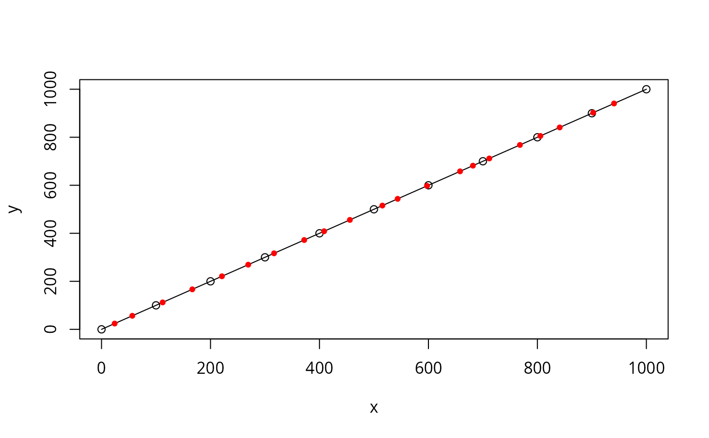
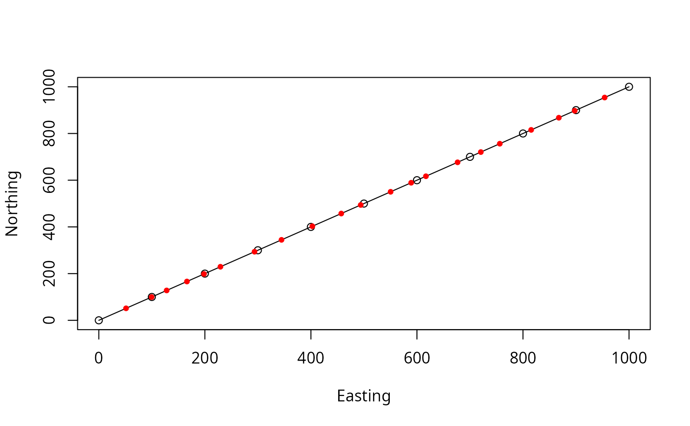
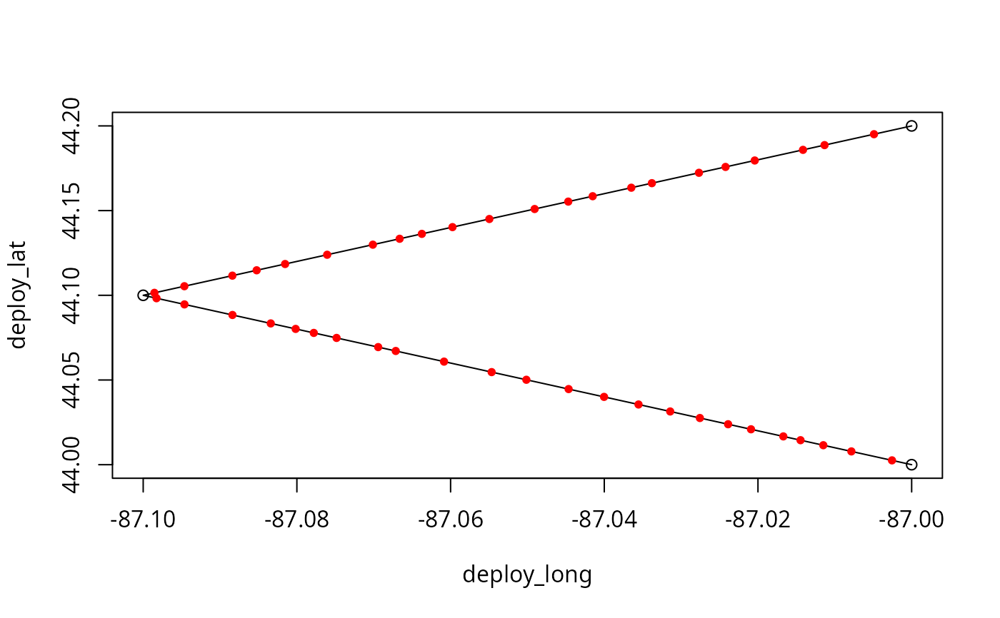
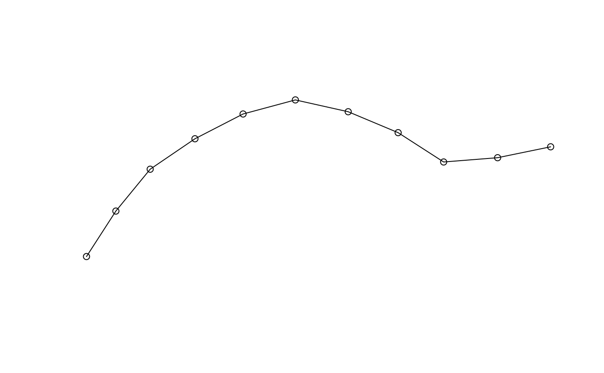
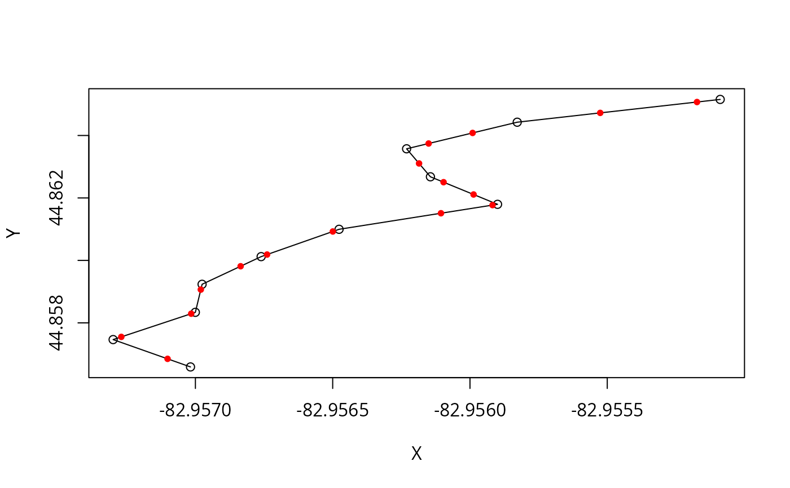

R/sim-transmit_along_path.r
transmit_along_path.RdSimulate tag signal transmission along a pre-defined path (x, y coords) based on constant movement velocity, transmitter delay range, and duration of signal.
A data frame or matrix with at least two rows and named columns
with coordinates that define path.
OR
A object of class
sf::sf() or sf::sfc() containing POINT
features with a geometry column. (sp::SpatialPointsDataFrame()
is also allowed.)
A numeric scalar with movement velocity along track; assumed constant; in meters per second.
A 2-element numeric vector with minimum and maximum delay (time in seconds from end of one coded burst to beginning of next).
A numeric scalar with duration (in seconds) of each coded burst (i.e., pulse train).
A named list containing the names of columns with coordinates
(defaults are x and y) in path. Ignored if
trnsLoc is a spatial object with a geometry column.
Defines the coordinate reference system (object of class
crs or a numeric EPSG code) of coordinates in path, if missing; ignored otherwise.
If no valid crs is specified in path or via pathCRS = NA (default value), then path coordinates are assumed to be in an
arbitrary Cartesian coordinate system with base unit of 1 meter. See Note.
Logical. If TRUE (default) then output is an sf object.
If FALSE, then output is a data.frame.
When sp_out = TRUE, an sf object containing one
POINT feature for each simulated transmission and a column named
time (defined below).
When sp_out = FALSE, a data.frame with the following columns:
x coordinates for start of each transmission.
y coordinates for start of each transmission.
Elapsed time, in
seconds, from the start of input path to the start of each
transmission.
Delays are drawn from uniform distribution defined by delay range.
First, elapsed time in seconds at each vertex in path is calculated
based on path length and velocity. Next, delays are simulated and burst
durations are added to each delay to determine the time of each signal
transmission. Location of each signal transmission along the path is
linearly interpolated.
Computation time is fastest if coordinates in path are in a
Cartesian (projected) coordinate system and slowest if coordinates are in a
geographic coordinate system (e.g., longitude, latitude) because different
methods are used to calculate step lengths in each case. When path
CRS is Cartesian (e.g., UTM), step lengths are calculated as simple
Euclidean distance. When CRS is geographic, step lengths are calculated as
Haversine distances using geodist::geodist() (with
measure = "haversine").
This function was written to be called after
crw_in_polygon() and before detect_transmissions(),
which was designed to accept the result as input (trnsLoc).
# Example 1 - data.frame input (default column names)
mypath <- data.frame(
x = seq(0, 1000, 100),
y = seq(0, 1000, 100)
)
mytrns <- transmit_along_path(mypath,
vel = 0.5,
delayRng = c(60, 180),
burstDur = 5.0,
sp_out = FALSE
)
plot(mypath, type = "o")
points(mytrns, pch = 20, col = "red")

# Example 2 - data.frame input (non-default column names)
mypath <- data.frame(
Easting = seq(0, 1000, 100),
Northing = seq(0, 1000, 100)
)
mytrns <- transmit_along_path(mypath,
vel = 0.5, delayRng = c(60, 180),
burstDur = 5.0,
colNames = list(
x = "Easting",
y = "Northing"
),
sp_out = FALSE
)
plot(mypath, type = "o")
points(mytrns, pch = 20, col = "red")

# Example 3 - data.frame input using pathCRS arg
mypath <- data.frame(
deploy_long = c(-87, -87.1, -87),
deploy_lat = c(44, 44.1, 44.2)
)
mytrns <- transmit_along_path(mypath,
vel = 0.5, delayRng = c(600, 1800),
burstDur = 5.0,
colNames = list(
x = "deploy_long",
y = "deploy_lat"
),
pathCRS = 4326,
sp_out = FALSE
)
plot(mypath, type = "o")
points(mytrns, pch = 20, col = "red")

# Example 4 - sf POINT input
# simulate in great lakes polygon
data(great_lakes_polygon)
mypath_sf <- crw_in_polygon(great_lakes_polygon,
theta = c(0, 25),
stepLen = 100,
initHeading = 0,
nsteps = 10,
cartesianCRS = 3175
)
#> Simulating tracks...
#>
|
| | 0%
|
|================================================================ | 92%
#> Done.
mytrns_sf <- transmit_along_path(mypath_sf,
vel = 0.5,
delayRng = c(60, 180),
burstDur = 5.0
)
plot(mypath_sf, type = "o")
points(sf::st_coordinates(mytrns_sf), pch = 20, col = "red")

# Example 5 - SpatialPointsDataFrame input
# simulate in great lakes polygon
data(greatLakesPoly)
mypath_sp <- crw_in_polygon(greatLakesPoly,
theta = c(0, 25),
stepLen = 100,
initHeading = 0,
nsteps = 10,
cartesianCRS = 3175
)
#> Simulating tracks...
#>
|
| | 0%
|
|================================================================ | 92%
#> Done.
mytrns_sp <- transmit_along_path(mypath_sp,
vel = 0.5,
delayRng = c(60, 180),
burstDur = 5.0
)
plot(sf::st_coordinates(sf::st_as_sf(mypath_sp)), type = "o")
points(sf::st_coordinates(mytrns_sp), pch = 20, col = "red")
